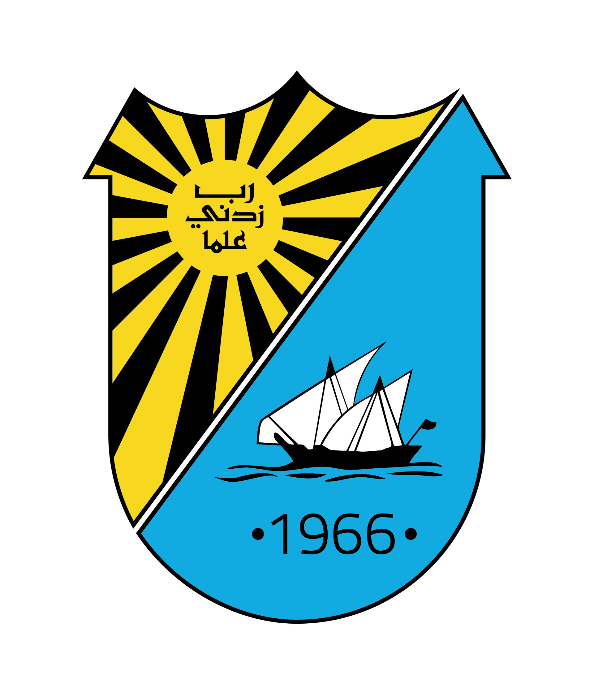
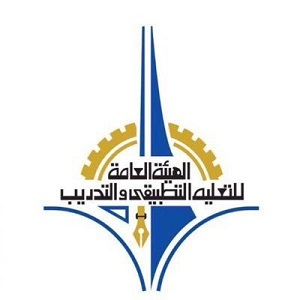
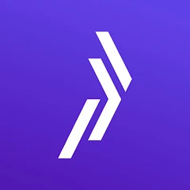
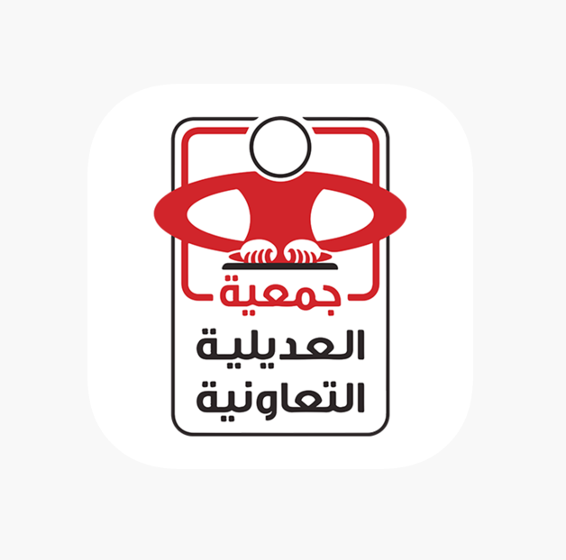
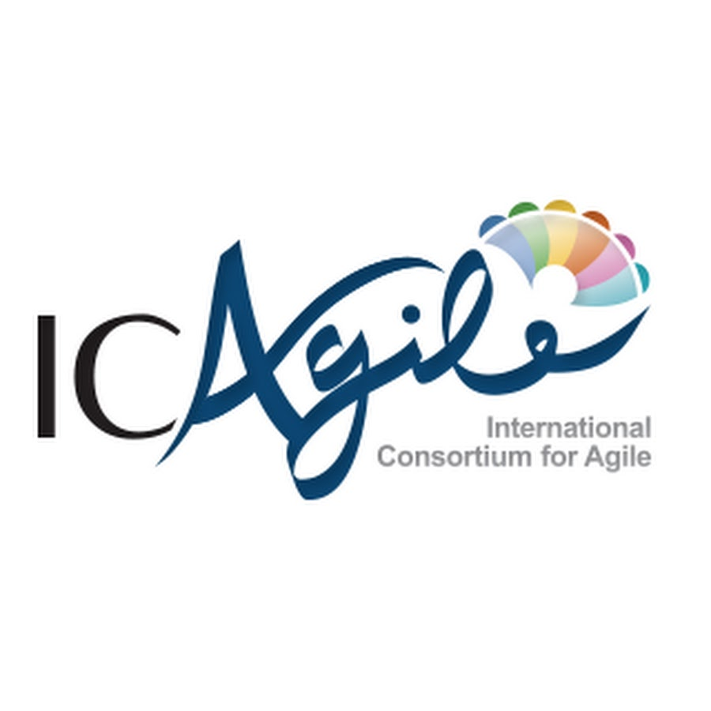
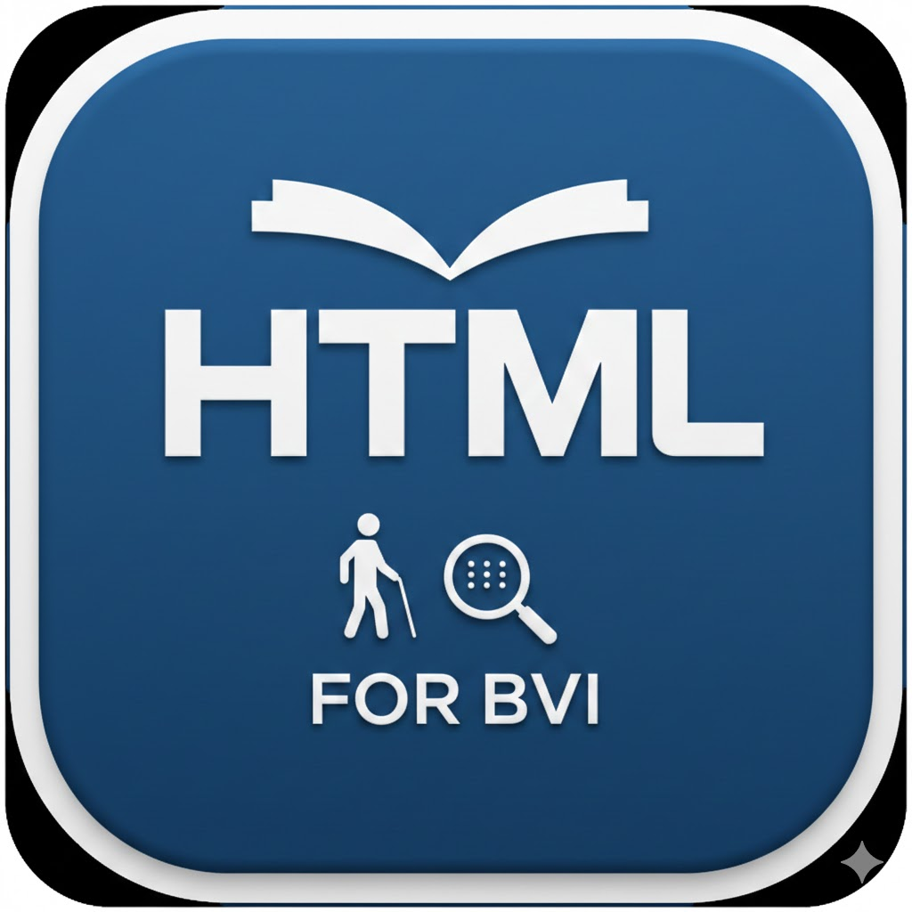
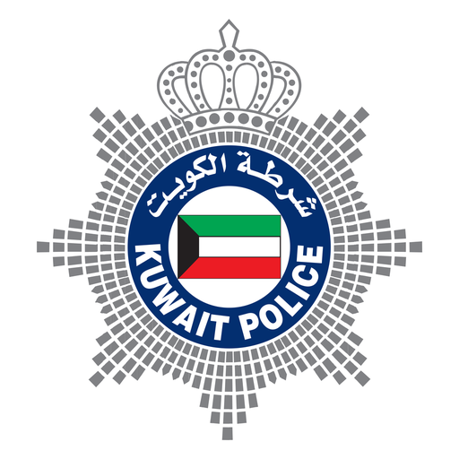

Education

Master's Degree in Software Engineering
The University of Sydney
01/2027 - Present | Sydney, Australia

Master's Degree in Computing Information Systems
Kuwait University
10/2021 - 12/2025 | Kuwait City, Kuwait
Bachelor's Degree in Software Engineering
Rochester Institute of Technology
08/2013 - 05/2018 | New York, United States
Experience

Academic Scholar – Software Engineering
Abdullah Al Salem University (AASU) | 01/2027 - Present | Sydney, Australia
- Awarded a fully funded academic scholarship to pursue advanced postgraduate studies in Software Engineering at the University of Sydney.
- Undertaking a sponsored academic pathway encompassing a Master of Engineering in Software Engineering followed by PhD research.
- Develop advanced expertise in software engineering, system design, research methodologies, and emerging software technologies.
- Pursue research interests in Software Engineering, Human-Computer Interaction, Assistive Technology, Accessibility, and inclusive digital solutions.
- Focus on translating academic research and industry experience into practical, accessible, and user-centered technology solutions.

Assistant Manager - Platform Management Support
Kuwait International Bank | 06/2025 - 01/2027 | Kuwait
- Oversee daily support for core banking and digital applications, ensuring system stability and quick resolution of incidents.
- Coordinate with vendors and internal teams to manage upgrades, patches, and production issues.
- Lead root cause analysis and implement improvements to reduce recurring issues.
- Support new system rollouts and changes, ensuring smooth transitions and minimal business disruption.
- Prepare performance reports and ensure compliance with ITIL practices and banking standards.

Part-Time Lecturer
The Public Authority for Applied Education and Training | 09/2025 - 12/2025 | Kuwait
Higher Institute for Communications and Navigation | Course: Server Operating Systems
- Deliver theoretical and practical lectures on Windows Server 2019 administration, file systems, virtualization, and networking fundamentals.
- Design and evaluate lab exercises that simulate real-world IT infrastructure and system management scenarios.
- Guide students in troubleshooting, configuration, and server security best practices.
- Integrate accessibility and inclusive learning methods to support students with different learning needs.
- Collaborate with the academic department to align course content with current industry technologies and certifications.
Previous Experience
-
Channel and Support Engineer at Kuwait International Bank (04/2023 - 05/2025, Kuwait)
-
UX/UI Designer at Kuwait International Bank (04/2021 - 03/2023, Kuwait)
-

UX/UI Designer at Warba Bank (09/2020 - 04/2021, Kuwait) -
Frontend Software Developer at Warba Bank (05/2019 - 09/2020, Kuwait)
-

Web Developer at Adailiya Cooperative Society (11/2018 - 05/2019, Kuwait)
Certifications
Leadership Across Boundaries: Creating Connections, Inspiring Change
GUST Executive Education

Google IT Support Professional Certificate
Digital Transformation with Google Cloud

Agile Expert Certificate of Proficiency
ICAgile

Mobile User Experience (UX) Design
IxDF - Interaction Design Foundation
Human-Computer Interaction HCI
IxDF - Interaction Design Foundation
Projects

TechForAll
An accessible web-based platform aggregating assistive technology tools for students with learning disabilities in the GCC, with a focus on Arabic localization and inclusive design.
View Project →
HTML4BVI
An audio-based HTML learning platform designed for blind and visually impaired learners, focusing on screen-reader-friendly navigation and accessible content delivery.
View Project →Volunteering

Covid-19 Volunteer
MINISTRY OF INTERIOR (MOI)
03/2020 - 05/2020
Worked in finding the strategy to produce curfew permits as fast as possible and keep producing them.